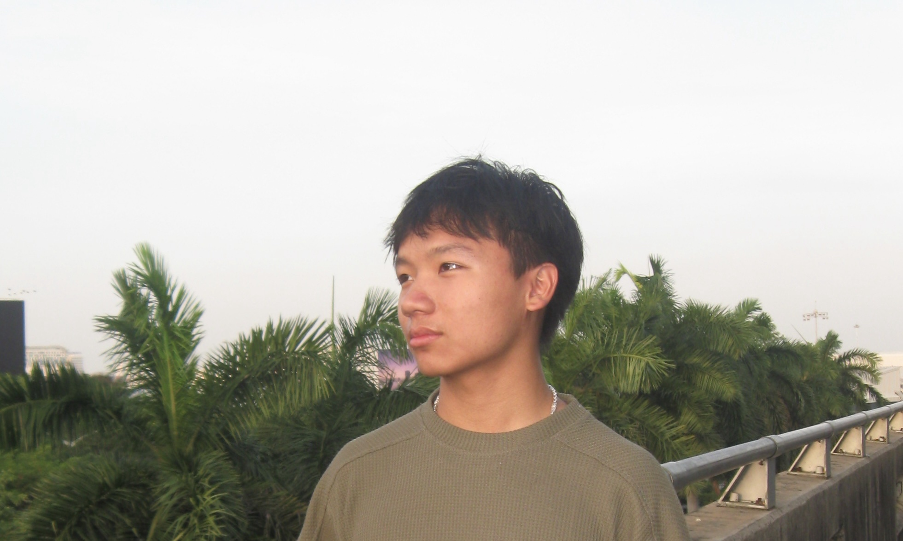

Samsung Nguyen is my legal name. I don't have a preference, so pick whichever feels most natural to you.
I'm a sophomore mechanical engineering student who thrives in conditions where I can rapidly develop my capabilities. At Thingz, I mastered new software and gained experience building digital twins of electrical substations across the nation. In Formula, I contribute to the suspension subsystem of an electric race car, taking ownership of a variety of design and manufacturing projects. I also serve as the Sophomore Representative for ISU's SolidWorks Club, where I mentor other engineering students developing CAD skills.
I live for the moments when relentless passion and problem-solving align to create a solution. Whether it be designing a critical suspension component or locating fish in a body of water, I'll find a problem to solve regardless.